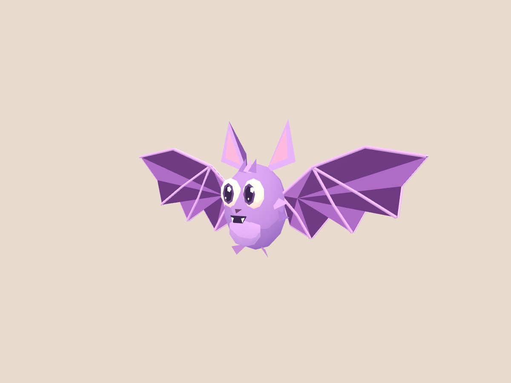
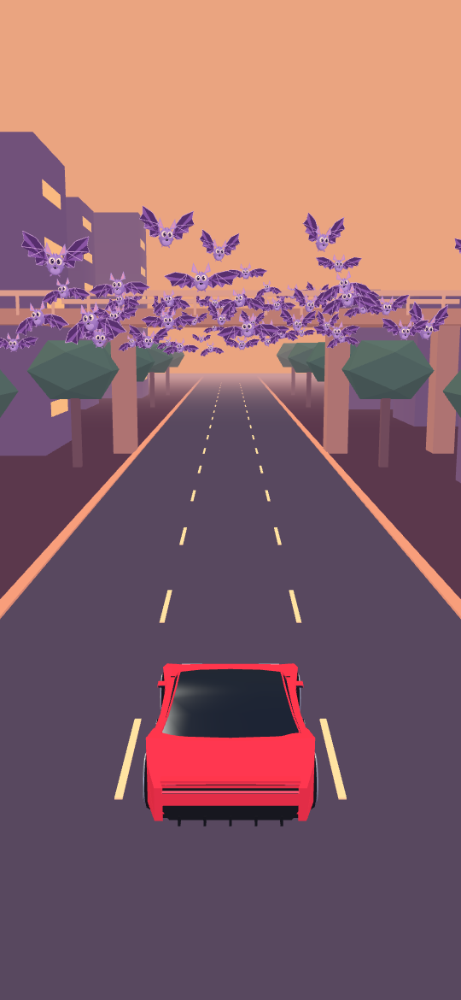
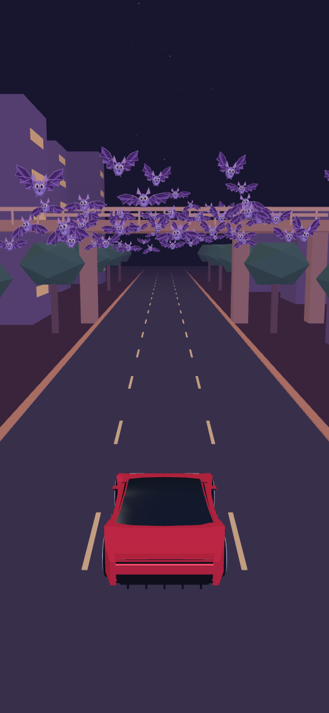
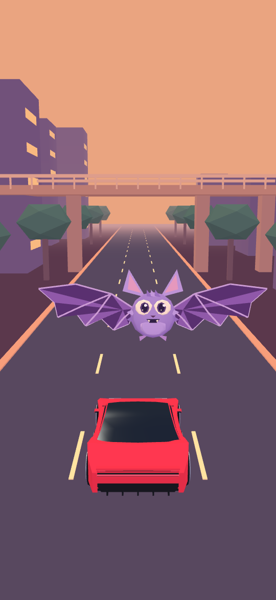

Bat study / Revision 1 · shoulder-hinged wings, bright eyes and a readable night contour.

Plum membranes, lavender fingers and a cream eye highlight. Opaque geometry throughout.

70 bats · three instanced draws

Solid lavender wing contour

Wings spread, body flattened
Cycle: 0.82 → 0.10 → −0.82 → −0.10 radians. Live flap uses sin(time × 14 + phase) × 0.82. Body stays rigid.